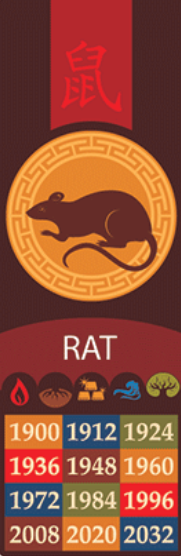

U A GOOFY AHH RAT FR...type shit!!!...... (kohinoor forced me to do this...)
A zodiac animal cycles every 12 years, The rat is always the first one in each cycle.
To see more info below, hit the buttons!
- If you are a rat you should have number of good traits
- some being quick-witted, kind, being adaptable to most situations etc
- But, rats can also be secretive and materialistic...
- Note that some personality can also be influenced by the element that one is
- These buttons should reveal what extra personality traits come with your corresponding element
- if you recognize this image it shows which elements correspond to which year
>
- More likely to be
- talkative, shrewd, conservative, and wise
- Strong as an independent (and also prefers to be)
- But has a strong sense of teamwork, is also talented and virtous
- More likely to be...
- Brave, quiet, cordial/friendly to their friends, but also very strick with themselves
- More likely to be...
- Honest, flexible,modest, but also serious
- With an Ox, Dragon, Other rats, or Monkey
- Your personalities make up/compliment each other well
- But with Rabbit, Horses, Or Roosters
- You're more likely to kill eachother than be in a set radius of eachother.